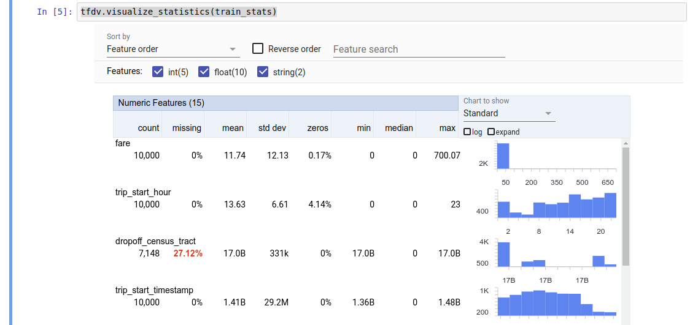
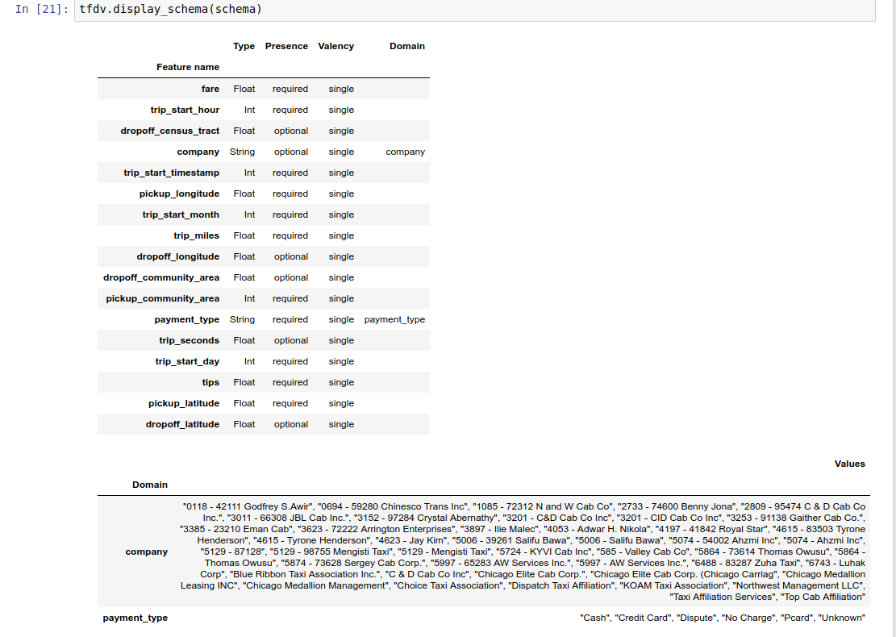
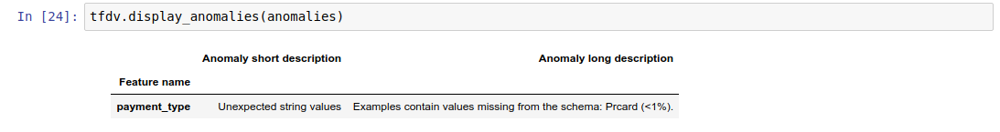
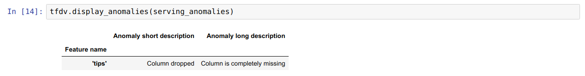

Get started with TensorFlow Data Validation¶
TensorFlow Data Validation (TFDV) can analyze training and serving data to:
-
compute descriptive statistics,
-
infer a schema,
-
detect data anomalies.
The core API supports each piece of functionality, with convenience methods that build on top and can be called in the context of notebooks.
Computing descriptive data statistics¶
TFDV can compute descriptive statistics that provide a quick overview of the data in terms of the features that are present and the shapes of their value distributions. Tools such as Facets Overview can provide a succinct visualization of these statistics for easy browsing.
For example, suppose that path points to a file in the TFRecord format
(which holds records of type tensorflow.Example). The following snippet
illustrates the computation of statistics using TFDV:
The returned value is a DatasetFeatureStatisticsList protocol buffer. The example notebook contains a visualization of the statistics using Facets Overview:

The previous example assumes that the data is stored in a TFRecord file. TFDV
also supports CSV input format, with extensibility for other common formats.
You can find the available data decoders here.
In addition, TFDV provides the tfdv.generate_statistics_from_dataframe utility
function for users with in-memory data represented as a pandas DataFrame.
In addition to computing a default set of data statistics, TFDV can also
compute statistics for semantic domains (e.g., images, text). To enable
computation of semantic domain statistics, pass a tfdv.StatsOptions
object with enable_semantic_domain_stats set to True to
tfdv.generate_statistics_from_tfrecord.
Running on Google Cloud¶
Internally, TFDV uses Apache Beam's data-parallel processing framework to scale the computation of statistics over large datasets. For applications that wish to integrate deeper with TFDV (e.g. attach statistics generation at the end of a data-generation pipeline, generate statistics for data in custom format), the API also exposes a Beam PTransform for statistics generation.
To run TFDV on Google Cloud, the TFDV wheel file must be downloaded and provided to the Dataflow workers. Download the wheel file to the current directory as follows:
pip download tensorflow_data_validation \
--no-deps \
--platform manylinux2010_x86_64 \
--only-binary=:all:
The following snippet shows an example usage of TFDV on Google Cloud:
import tensorflow_data_validation as tfdv
from apache_beam.options.pipeline_options import PipelineOptions, GoogleCloudOptions, StandardOptions, SetupOptions
PROJECT_ID = ''
JOB_NAME = ''
GCS_STAGING_LOCATION = ''
GCS_TMP_LOCATION = ''
GCS_DATA_LOCATION = ''
# GCS_STATS_OUTPUT_PATH is the file path to which to output the data statistics
# result.
GCS_STATS_OUTPUT_PATH = ''
PATH_TO_WHL_FILE = ''
# Create and set your PipelineOptions.
options = PipelineOptions()
# For Cloud execution, set the Cloud Platform project, job_name,
# staging location, temp_location and specify DataflowRunner.
google_cloud_options = options.view_as(GoogleCloudOptions)
google_cloud_options.project = PROJECT_ID
google_cloud_options.job_name = JOB_NAME
google_cloud_options.staging_location = GCS_STAGING_LOCATION
google_cloud_options.temp_location = GCS_TMP_LOCATION
options.view_as(StandardOptions).runner = 'DataflowRunner'
setup_options = options.view_as(SetupOptions)
# PATH_TO_WHL_FILE should point to the downloaded tfdv wheel file.
setup_options.extra_packages = [PATH_TO_WHL_FILE]
tfdv.generate_statistics_from_tfrecord(GCS_DATA_LOCATION,
output_path=GCS_STATS_OUTPUT_PATH,
pipeline_options=options)
In this case, the generated statistics proto is stored in a TFRecord file
written to GCS_STATS_OUTPUT_PATH.
NOTE When calling any of the tfdv.generate_statistics_... functions (e.g.,
tfdv.generate_statistics_from_tfrecord) on Google Cloud, you must provide an
output_path. Specifying None may cause an error.
Inferring a schema over the data¶
The schema describes the expected properties of the data. Some of these properties are:
- which features are expected to be present
- their type
- the number of values for a feature in each example
- the presence of each feature across all examples
- the expected domains of features.
In short, the schema describes the expectations for "correct" data and can thus be used to detect errors in the data (described below). Moreover, the same schema can be used to set up TensorFlow Transform for data transformations. Note that the schema is expected to be fairly static, e.g., several datasets can conform to the same schema, whereas statistics (described above) can vary per dataset.
Since writing a schema can be a tedious task, especially for datasets with lots of features, TFDV provides a method to generate an initial version of the schema based on the descriptive statistics:
In general, TFDV uses conservative heuristics to infer stable data properties from the statistics in order to avoid overfitting the schema to the specific dataset. It is strongly advised to review the inferred schema and refine it as needed, to capture any domain knowledge about the data that TFDV's heuristics might have missed.
By default, tfdv.infer_schema infers the shape of each required feature, if
value_count.min equals value_count.max for the feature. Set the
infer_feature_shape argument to False to disable shape inference.
The schema itself is stored as a
Schema protocol buffer
and can thus be updated/edited using the standard protocol-buffer API. TFDV also
provides a few utility methods
to make these updates easier. For instance,
suppose that the schema contains the following stanza to describe a required
string feature payment_type that takes a single value:
feature {
name: "payment_type"
value_count {
min: 1
max: 1
}
type: BYTES
domain: "payment_type"
presence {
min_fraction: 1.0
min_count: 1
}
}
To mark that the feature should be populated in at least 50% of the examples:
The example notebook contains a simple visualization of the schema as a table, listing each feature and its main characteristics as encoded in the schema.

Checking the data for errors¶
Given a schema, it is possible to check whether a dataset conforms to the expectations set in the schema or whether there exist any [data anomalies] (https://github.com/tensorflow/data-validation/blob/master/g3doc/anomalies.md). You can check your data for errors (a) in the aggregate across an entire dataset by matching the statistics of the dataset against the schema, or (b) by checking for errors on a per-example basis.
Matching the statistics of the dataset against a schema¶
To check for errors in the aggregate, TFDV matches the statistics of the dataset against the schema and marks any discrepancies. For example:
# Assume that other_path points to another TFRecord file
other_stats = tfdv.generate_statistics_from_tfrecord(data_location=other_path)
anomalies = tfdv.validate_statistics(statistics=other_stats, schema=schema)
The result is an instance of the
Anomalies
protocol buffer and describes any errors where the statistics do not agree with
the schema. For example, suppose that the data at other_path contains examples
with values for the feature payment_type outside the domain specified in the
schema.
This produces an anomaly
payment_type Unexpected string values Examples contain values missing from the schema: Prcard (<1%).
indicating that an out of domain value was found in the stats in < 1% of the feature values.
If this was expected, then the schema can be updated as follows:
If the anomaly truly indicates a data error, then the underlying data should be fixed before using it for training.
The various anomaly types that can be detected by this module are listed here.
The example notebook contains a simple visualization of the anomalies as a table, listing the features where errors are detected and a short description of each error.

Checking for errors on a per-example basis¶
TFDV also provides the option to validate data on a per-example basis, instead of comparing dataset-wide statistics against the schema. TFDV provides functions for validating data on a per-example basis and then generating summary statistics for the anomalous examples found. For example:
options = tfdv.StatsOptions(schema=schema)
anomalous_example_stats = tfdv.validate_examples_in_tfrecord(
data_location=input, stats_options=options)
The anomalous_example_stats that validate_examples_in_tfrecord returns is
a DatasetFeatureStatisticsList
protocol buffer in which each dataset consists of the set of examples that
exhibit a particular anomaly. You can use this to determine the number of
examples in your dataset that exhibit a given anomaly and the characteristics of
those examples.
Schema Environments¶
By default, validations assume that all datasets in a pipeline adhere to a single schema. In some cases introducing slight schema variations is necessary, for instance features used as labels are required during training (and should be validated), but are missing during serving.
Environments can be used to express such requirements. In particular, features in schema can be associated with a set of environments using default_environment, in_environment and not_in_environment.
For example, if the tips feature is being used as the label in training, but missing in the serving data. Without environment specified, it will show up as an anomaly.
serving_stats = tfdv.generate_statistics_from_tfrecord(data_location=serving_data_path)
serving_anomalies = tfdv.validate_statistics(serving_stats, schema)

To fix this, we need to set the default environment for all features to be both 'TRAINING' and 'SERVING', and exclude the 'tips' feature from SERVING environment.
# All features are by default in both TRAINING and SERVING environments.
schema.default_environment.append('TRAINING')
schema.default_environment.append('SERVING')
# Specify that 'tips' feature is not in SERVING environment.
tfdv.get_feature(schema, 'tips').not_in_environment.append('SERVING')
serving_anomalies_with_env = tfdv.validate_statistics(
serving_stats, schema, environment='SERVING')
Checking data skew and drift¶
In addition to checking whether a dataset conforms to the expectations set in the schema, TFDV also provides functionalities to detect:
- skew between training and serving data
- drift between different days of training data
TFDV performs this check by comparing the statistics of different datasets based on the drift/skew comparators specified in the schema. For example, to check if there is any skew between 'payment_type' feature within training and serving dataset:
# Assume we have already generated the statistics of training dataset, and
# inferred a schema from it.
serving_stats = tfdv.generate_statistics_from_tfrecord(data_location=serving_data_path)
# Add a skew comparator to schema for 'payment_type' and set the threshold
# of L-infinity norm for triggering skew anomaly to be 0.01.
tfdv.get_feature(schema, 'payment_type').skew_comparator.infinity_norm.threshold = 0.01
skew_anomalies = tfdv.validate_statistics(
statistics=train_stats, schema=schema, serving_statistics=serving_stats)
NOTE L-infinity norm will only detect skew for the categorical features. Instead
of specifying an infinity_norm threshold, specifying a
jensen_shannon_divergence threshold in the skew_comparator would detect
skew for both numeric and categorical features.
Same with checking whether a dataset conform to the expectations set in the
schema, the result is also an instance of the
Anomalies
protocol buffer and describes any skew between the training and serving
datasets. For example, suppose the serving data contains significantly more
examples with feature payement_type having value Cash, this produces a skew
anomaly
payment_type High L-infinity distance between serving and training The L-infinity distance between serving and training is 0.0435984 (up to six significant digits), above the threshold 0.01. The feature value with maximum difference is: Cash
If the anomaly truly indicates a skew between training and serving data, then further investigation is necessary as this could have a direct impact on model performance.
The example notebook contains a simple example of checking for skew-based anomalies.
Detecting drift between different days of training data can be done in a similar way
# Assume we have already generated the statistics of training dataset for
# day 2, and inferred a schema from it.
train_day1_stats = tfdv.generate_statistics_from_tfrecord(data_location=train_day1_data_path)
# Add a drift comparator to schema for 'payment_type' and set the threshold
# of L-infinity norm for triggering drift anomaly to be 0.01.
tfdv.get_feature(schema, 'payment_type').drift_comparator.infinity_norm.threshold = 0.01
drift_anomalies = tfdv.validate_statistics(
statistics=train_day2_stats, schema=schema, previous_statistics=train_day1_stats)
NOTE L-infinity norm will only detect skew for the categorical features. Instead
of specifying an infinity_norm threshold, specifying a
jensen_shannon_divergence threshold in the skew_comparator would detect
skew for both numeric and categorical features.
Writing custom data connector¶
To compute data statistics, TFDV provides several
convenient methods
for handling input data in various formats (e.g. TFRecord of
tf.train.Example,
CSV, etc). If your data format is not in this list, you need to write a custom
data connector for reading input data, and connect it with the TFDV core API for
computing data statistics.
The TFDV
core API for computing data statistics
is a
Beam PTransform
that takes a PCollection of batches of input examples (a batch of input examples
is represented as an Arrow RecordBatch), and outputs
a PCollection containing a single DatasetFeatureStatisticsList protocol
buffer.
Once you have implemented the custom data connector that batches your
input examples in an Arrow RecordBatch, you need to connect it with the
tfdv.GenerateStatistics API for computing the data statistics. Take TFRecord
of tf.train.Example's for example. tfx_bsl provides the
TFExampleRecord
data connector, and below is an example of how to connect it with the
tfdv.GenerateStatistics API.
import tensorflow_data_validation as tfdv
from tfx_bsl.public import tfxio
import apache_beam as beam
from tensorflow_metadata.proto.v0 import statistics_pb2
DATA_LOCATION = ''
OUTPUT_LOCATION = ''
with beam.Pipeline() as p:
_ = (
p
# 1. Read and decode the data with tfx_bsl.
| 'TFXIORead' >> (
tfxio.TFExampleRecord(
file_pattern=[DATA_LOCATION],
telemetry_descriptors=['my', 'tfdv']).BeamSource())
# 2. Invoke TFDV `GenerateStatistics` API to compute the data statistics.
| 'GenerateStatistics' >> tfdv.GenerateStatistics()
# 3. Materialize the generated data statistics.
| 'WriteStatsOutput' >> WriteStatisticsToTFRecord(OUTPUT_LOCATION))
Computing statistics over slices of data¶
TFDV can be configured to compute statistics over slices of data. Slicing can be
enabled by providing slicing functions which take in an Arrow RecordBatch and
output a sequence of tuples of form (slice key, record batch). TFDV provides
an easy way to
generate feature value based slicing functions
which can be provided as part of tfdv.StatsOptions when computing statistics.
When slicing is enabled, the output DatasetFeatureStatisticsList proto contains multiple DatasetFeatureStatistics protos, one for each slice. Each slice is identified by a unique name which is set as the dataset name in the DatasetFeatureStatistics proto. By default TFDV computes statistics for the overall dataset in addition to the configured slices.
import tensorflow_data_validation as tfdv
from tensorflow_data_validation.utils import slicing_util
# Slice on country feature (i.e., every unique value of the feature).
slice_fn1 = slicing_util.get_feature_value_slicer(features={'country': None})
# Slice on the cross of country and state feature (i.e., every unique pair of
# values of the cross).
slice_fn2 = slicing_util.get_feature_value_slicer(
features={'country': None, 'state': None})
# Slice on specific values of a feature.
slice_fn3 = slicing_util.get_feature_value_slicer(
features={'age': [10, 50, 70]})
stats_options = tfdv.StatsOptions(
slice_functions=[slice_fn1, slice_fn2, slice_fn3])